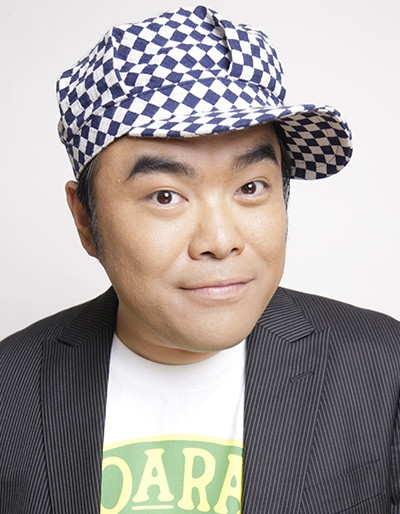

- Fresh Pretty Cure!
- Fresh Pretty Cure! Movie: The Kingdom of Toys has Lots of Secrets!?
|
Ken Maeda was a Japanese codedian, impressionist, actor and choregrapher. He gradulated from Tokyo Metropolitan Agricultural High School. He passed away from cardiac arrest on April 26th, 2016.
|
 |
|---|
| |
Kaoru Tachibana |
|
Kaoru Tachibana sells donuts at a Cafe in the park. He is laid back and easygoing, but passionate about his business. He does not care that Tart is a talking ferret. At the end of most of his jokes ends in a weird laugh. |
Go Back to Main Page |
Go Back to Homepage |
|
|
|
OR |
|